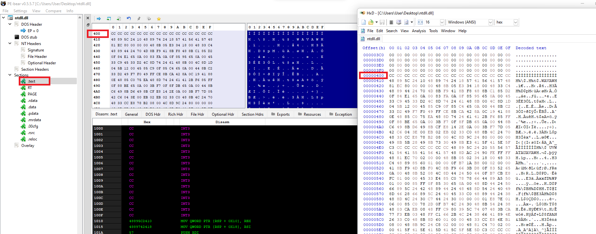
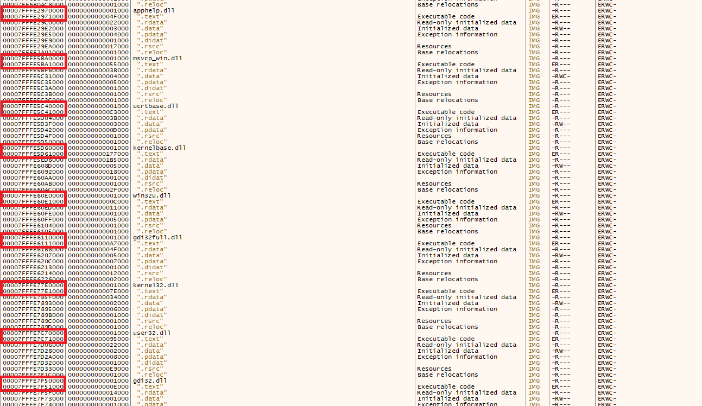

Introduction
Earlier modules demonstrated the power of using direct syscalls to avoid userland hooks by creating a syscall in their project file and invoking it instead. In this module, a different approach will be presented to achieve the same goal of circumventing these hooks. This approach replaces the hooked DLL in the loaded process with an unaltered version that is not hooked.
The difficulty in this method is obtaining the unhooked DLL, which is usually the ntdll.dll file.
Unhooking
Replacing the hooked DLL with an unhooked version requires manually setting up the IAT, fixing reallocations, and other tedious tasks. To avoid this, a portion of the DLL, specifically the .text section which contains the hooks, can be replaced instead. The text section contains the DLL's exported functions code, which is where potential userland hooks are installed.
Replacing the text section of an image file simply requires its base address and size, both of which are located in the IMAGE_OPTIONAL_HEADER header as BaseOfCode and SizeOfCode respectively.
Another way to retrieve the base address of the text section and its size, is through the IMAGE_SECTION_HEADER header, by searching for the .text string in the IMAGE_SECTION_HEADER.Name array, which was demonstrated in the Parsing PE Headers module.
The memory permissions of the text section of the DLL need to be changed to replace it with a new text section. To do this, the VirtualProtect WinAPI must be used. The text section is generally marked as RX, however in order to replace it with a new text section, the memory permissions should be modified to allow for writing data. Ensure the new memory permissions are set to PAGE_EXECUTE_READWRITE or PAGE_EXECUTE_WRITECOPY to allow for writing data as well as executing the functions.
Text Section Alignment
The offset of the text section for most DLLs on disk is 0x400 which is equivalent to 1024. This can be seen below using Pe-Bear and HxD binary editor when inspecting ntdll.dll.

The offset will change when the DLL file is mapped into the memory of a process. The text section is mainly set to be at an offset of 0x1000 or 4096 as shown below.

On Disk vs In Memory Offset
The text section of the DLL image on disk is set to an offset of 1KB or 1024 bytes due to binary files often being aligned on 1kb boundaries, which assists in improving disk I/O operations performance.
When the binary is loaded into memory and mapped into a process, it is aligned to a different boundary of 4KB or 4096 bytes, which is often utilized as a page size for virtual memory operations to enhance memory access and CPU performance.
It's crucial to keep this in mind as this information will be required when implementing the unhooking logic in the upcoming modules.
NTDLL Unhooking Methods
Later modules will teach how to replace the text section of the ntdll.dll file with a different version retrieved from the sources below.
ntdll.dll binary is saved C:\Windows\System32\ntdll.dll.ntdll.dll is read from another remote suspended process.ntdll.dll is read from a web server, which in this case will be Winbindex.